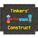
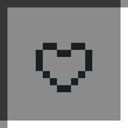
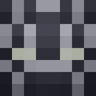

Getting one#
Find an  Infinity Gauntlet Cast in a village weaponsmith's chest and make the gauntlet (
Infinity Gauntlet Cast in a village weaponsmith's chest and make the gauntlet ( JEI has the recipe). With
JEI has the recipe). With
Where to wear it#
The gauntlet gives you the infinity: power in your off hand, main hand, the  Curios hands slot or, on Fabric, the Curios hands slot works best, and it can't be seen in first person when it's in your off hand.
Curios hands slot or, on Fabric, the Curios hands slot works best, and it can't be seen in first person when it's in your off hand.
- With
 Pugmeowla's Infintrix and
Pugmeowla's Infintrix and  Alien Evolution, Into the Omniverse or Omnitrix Evolution, an equipped Omnitrix works as a gauntlet. Hold a stone and right-click, no Infinity Gauntlet needed.
Alien Evolution, Into the Omniverse or Omnitrix Evolution, an equipped Omnitrix works as a gauntlet. Hold a stone and right-click, no Infinity Gauntlet needed. - The Black Panther necklace from

Pugmeowla's Herbs of Wakanda gives the gauntlet power too.
The stone menu#
The menu comes from CoreWithStuff. Hold the gauntlet in your main hand and right-click, or use Open GUI while you're wearing it. Each stone has its own slot:
 Soul Stone
Soul Stone Reality Stone
Reality Stone Space Stone
Space Stone Power Stone
Power Stone Time Stone
Time Stone Mind Stone
Mind StonePutting a stone in gives you its power, plays the insert sound and a short arm animation. Taking it out takes the power away. The menu is per player, and the gauntlet's tree warns that the old insert system can have syncing problems.
The gauntlet's skill tree#
The tree has info entries (Curios, Trinkets, Infintrix, CoreWithStuff and the Snap), an entry for every skin,
and Return to Original Gauntlet. The Snap wheel shows up once all six stones are in.